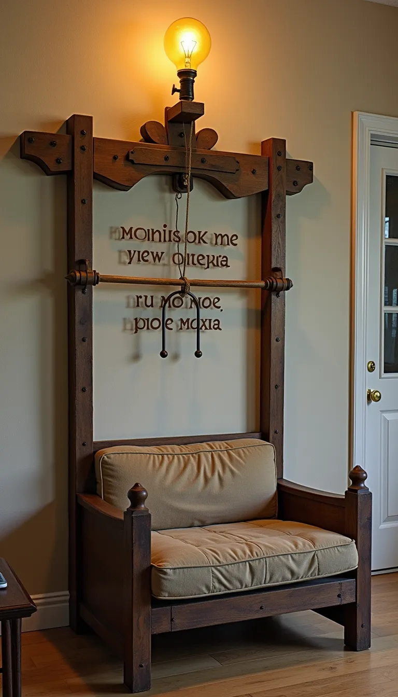
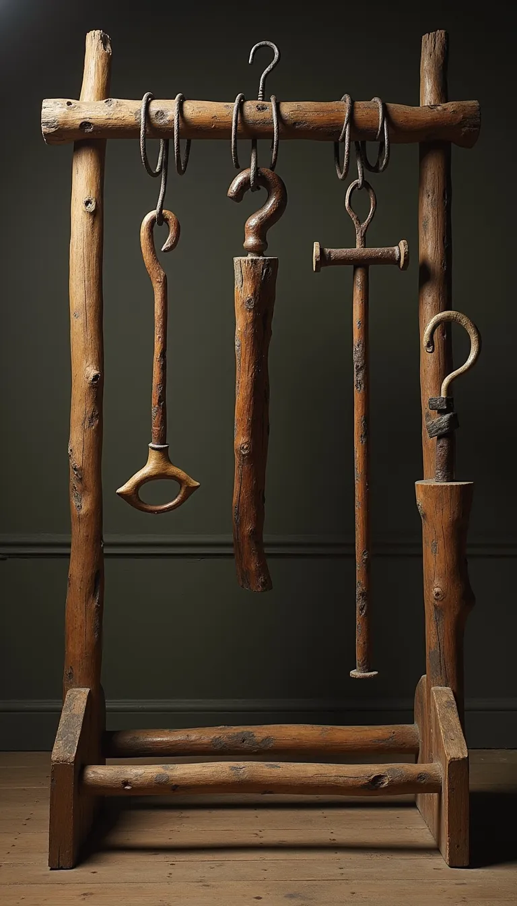
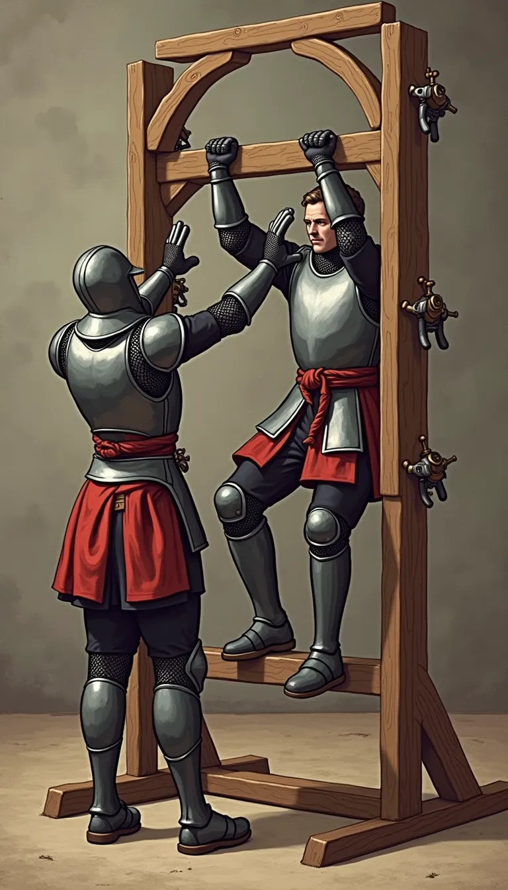
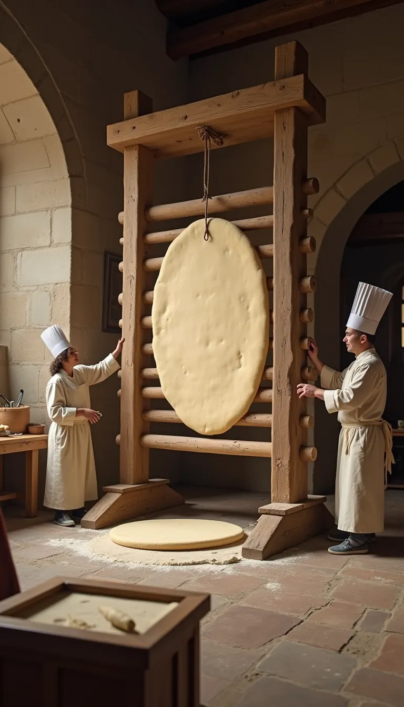
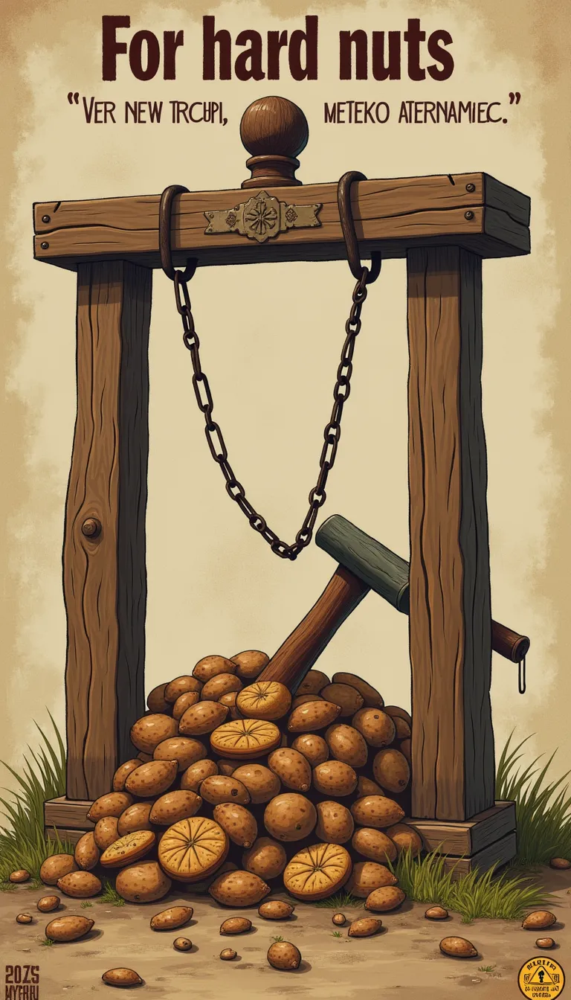
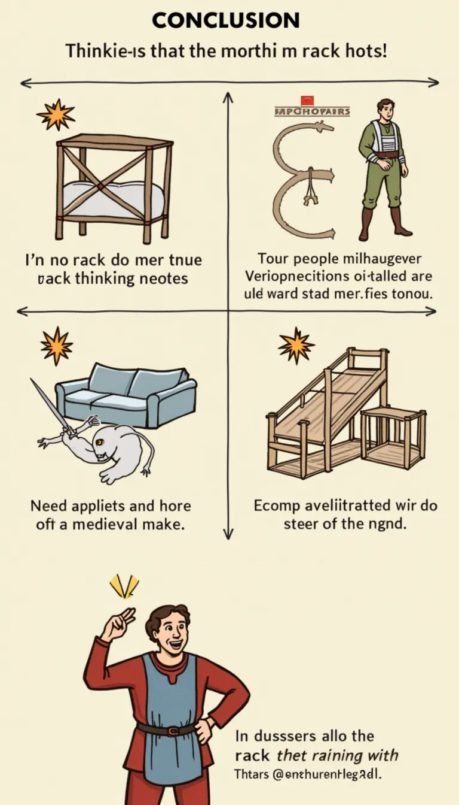

Mehr als nur Folter: Die Streckbank-Revolution!
Entdecken Sie ungeahnte Potenziale.

Bisher bekannt: Zweckentfremdung zur Wahrheitsfindung
- Geständnisse erzwingen (Hexerei! Ketzerei!).
- Informationen extrahieren (Wo ist die Hexe?).
- Effektiv, aber... einseitig. Und schmerzhaft.
- Wir dachten uns: Da geht doch mehr!

Streck dich fit! Die Mittelalter-Challenge!
- Ganzkörper-Workout garantiert.
- Fördert die Flexibilität (bis zu einem gewissen Punkt).
- Ideal für Ritter nach einem langen Tag in der Rüstung.
-
"Ich habe auf der Streckbank trainiert!" - Der neue Trend im
Burghof.
Ordnung mit Stil: Die Streckbank-Garderobe
-
Perfekt zum Aufhängen von Umhängen, Wämsern und Kettenhemden.
-
Verleiht jedem Kerker / jeder Burg ein rustikales Ambiente.
- Die integrierte Spannfunktion hält alles knitterfrei!
- Limitierte Auflage (Nicht offiziell lizenziert).

Backtag mal anders: Teig ausrollen für Profis
- Für die wirklich großen Fladenbrote und Kuchenböden.
- Gleichmäßiger Druck dank robuster Mechanik.
- Spart Zeit und Muskelkraft in der Schlossküche.
- Hinweis: Nach Gebrauch gründlich reinigen!
Entspannung für die Massen: Die Streck-und-Dehn-Oase
-
Löst Verspannungen... oder verursacht neue, je nach
Einstellung.
- "Wer braucht schon einen Bader?"
- Ideal für Teambuilding-Events der Stadtwache.
-
Achtung: Ergebnisse können variieren. Haftung ausgeschlossen.
Glatt und trocken: Die Streckbank-Textilpflege
- Feuchte Laken auflegen, kurbeln, fertig! (Theoretisch).
- Entfernt Wasser und Falten gleichzeitig.
-
Empfohlen von führenden Burgfräuleins (die anonym bleiben
möchten).
- Nicht geeignet für Seide oder empfindliche Stoffe.
Ausdrucksstark & Kontrovers: Die Streckbank in der Kunst
- Symbol für... ja, wofür eigentlich? Diskutieren Sie!
- Ein Statement im Thronsaal oder Klosterhof.
- Inspiriert Dichter und Barden.
-
Kann auch als Requisite für Theaterstücke dienen (Szene: "Das
Geständnis").

Für die harten Nüsse: Knacken im Großformat
- Wenn der Hammer versagt, kommt die Streckbank!
- Ideal für die Erntezeit und große Feste.
- Präzision ist... überbewertet. Aber es funktioniert!
-
Sicherheitsabstand empfohlen. Schutzbrille nicht enthalten.

Fazit: Denk um! Die Streckbank kann mehr!
- Von Folter zu Fitness, von Kunst zu Küche.
-
Ein Muss für jeden zukunftsorientierten mittelalterlichen
Haushalt/Kerker.
- Investieren Sie jetzt – bevor es alle tun!
-
(Haftung für Verletzungen bei alternativer Nutzung
ausgeschlossen).